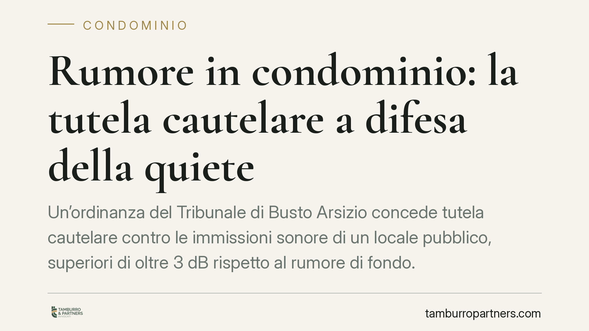

Rumore in condominio: la tutela cautelare a difesa della quiete
Un'ordinanza del Tribunale di Busto Arsizio concede tutela cautelare contro le immissioni sonore di un locale pubblico, superiori di oltre 3 dB rispetto al rumore di fondo. Il giudice inibisce impianti e stazionamento della clientela dopo le 22:00. La decisione conferma un principio ricorrente: il diritto alla salute dei residenti prevale sugli interessi economici di chi genera il disturbo.

Il caso
Alcuni residenti di un condominio hanno chiesto al Tribunale di Busto Arsizio di fermare il rumore proveniente da un locale pubblico posto nelle vicinanze. Tra impianti di diffusione sonora e stazionamento notturno della clientela, le immissioni rendevano difficile il riposo, in particolare nelle ore serali e notturne.
Il giudice, accertata la fondatezza della richiesta, ha concesso la tutela cautelare: ha inibito l'uso degli impianti sonori e lo stazionamento dei clienti all'esterno del locale dopo le 22:00. La misura è arrivata al termine di un procedimento d'urgenza, prima e indipendentemente dalla causa di merito.
Inquadramento normativo
La decisione si muove su più binari. Il primo è l'art. 844 c.c., che disciplina le immissioni di rumori, fumi e simili: il proprietario non può impedirle se non superano la "normale tollerabilità", tenuto conto delle condizioni dei luoghi. La giurisprudenza, per misurare questa soglia, utilizza spesso il criterio del limite differenziale: la differenza tra il rumore immesso e il rumore di fondo dell'ambiente. Un superamento di circa 3 decibel (dB) è comunemente considerato indice di intollerabilità.
Il secondo binario è l'art. 32 Cost., che tutela la salute come diritto fondamentale. È proprio il collegamento tra immissioni e danno alla salute (anche solo potenziale, sotto forma di disturbo del sonno) a giustificare la prevalenza dell'interesse dei residenti rispetto a quello commerciale del gestore.
Sul piano processuale, lo strumento è l'art. 700 c.p.c., la tutela cautelare "atipica". Serve quando chi agisce rischia un pregiudizio imminente e irreparabile nel tempo necessario a ottenere una sentenza. Ricorrono due presupposti: il *fumus boni iuris* (la probabile fondatezza del diritto) e il *periculum in mora* (il pericolo del ritardo). Resta sullo sfondo l'art. 2043 c.c., base del risarcimento del danno da far valere nel giudizio di merito.
Perché la decisione conta
L'ordinanza è rilevante per un dato pratico: il giudice non si è limitato a riconoscere il diritto, ma ha adottato misure concrete e immediate, incidendo sull'organizzazione dell'attività commerciale. Il divieto di stazionamento della clientela dopo le 22:00 dimostra che la tutela può estendersi oltre la fonte "tecnica" del rumore (l'impianto) fino al comportamento delle persone attratte dal locale.
Per i residenti significa che non è necessario attendere anni di causa per ottenere una prima protezione. Per gli esercenti significa che la conformità alle autorizzazioni amministrative non basta: il rispetto delle licenze non esclude la responsabilità civile verso i vicini quando le immissioni superano la normale tollerabilità.
Il peso della prova tecnica
Un punto merita attenzione. Decisioni di questo tipo si reggono quasi sempre su un accertamento tecnico. La consulenza tecnica d'ufficio (CTU) misura i livelli sonori e verifica il superamento del limite differenziale. Senza dati oggettivi, la lamentela resta un'affermazione difficile da sostenere in giudizio. La raccolta ordinata di elementi fin dall'inizio è quindi decisiva.
Cosa fare in concreto
- Documentate il disturbo. Annotate date, orari e durata degli episodi. Conservate eventuali comunicazioni con il gestore o l'amministratore.
- Richiedete una rilevazione fonometrica. Una perizia di parte che misuri il rumore immesso rispetto a quello di fondo rafforza la posizione prima ancora del giudizio.
- Inviate una diffida formale. Una lettera che descriva il problema e chieda la cessazione delle immissioni può risolvere la questione o, in ogni caso, costruire la prova del comportamento della controparte.
- Valutate la via cautelare. Se il disturbo è grave e attuale, il ricorso ex art. 700 c.p.c. consente di ottenere misure rapide, in attesa della causa di merito per il risarcimento.
- Coinvolgete l'amministratore se la fonte è condominiale. In condominio alcune soluzioni passano da interventi sulle parti comuni o da delibere assembleari.
La tutela della quiete non è una pretesa di comodo: tocca la salute e il riposo, beni che l'ordinamento protegge in modo pieno. Chi subisce immissioni intollerabili dispone di strumenti efficaci, purché li attivi con tempestività e con un supporto probatorio adeguato.
---
*Contributo informativo a cura di Tamburro & Partners - Avv. Giuseppe Tamburro. Non costituisce parere legale.*
Ogni condominio ha una storia a sé.
Se gestisci un'amministrazione e vuoi un confronto su una specifica questione condominiale, scrivi allo studio. Ti rispondiamo entro un giorno lavorativo.